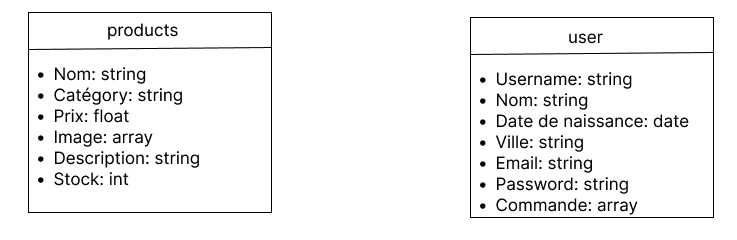
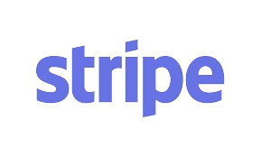
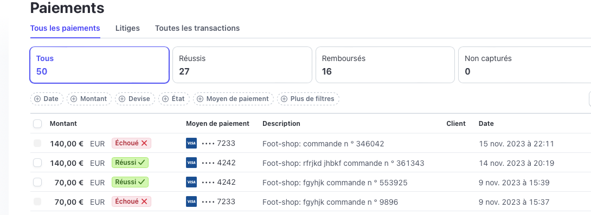
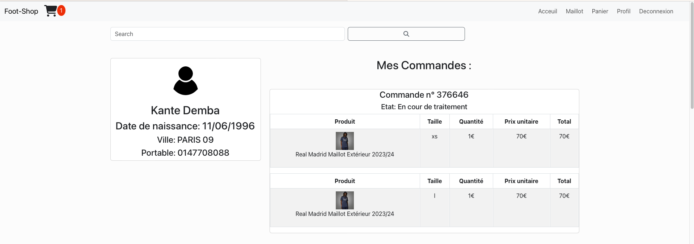

Description
Foot-Shop est une application web de vente en ligne spécialisée dans les maillots de football, offrant aux passionnés une expérience de shopping complète et sécurisée.

Fonctionnalités clés :
1-Base de Données MongoDB :
Pour la base de données, j'ai utilisé MongoDb avec la création de deux collections: Les users et les produits. Pour le panier, j'ai stocker les produits du panier dans le localStorage du site. Ce qui permet d'économiser de la mémoire en bdd.

2-Système CRUD :
Grâce à un backend basé sur Express et l'architecture MVC, foot-shop offre un système CRUD performant pour la gestion des produits, des utilisateurs et des commandes. Les opérations de création, lecture, mise à jour et suppression sont gérées de manière efficace pour une expérience utilisateur transparente.

3-Système de Paiement Stripe :
Pour gérées les paiements, j'ai intégré Stripe qui est une librairie qui permet d'effectuer des paiements en toute confiance et en toute sécurité. Voici une interface de ce que ça donne coté admin.
4-Interface Réactive avec ReactJS :

Pour le coté front de mon application,j'ai utiliser ReactJS. Il offre une interface utilisateur réactive et fluide. Grace à ça, Les utilisateurs peuvent naviguer facilement entre les différents liens du site.
5 - Gestion de Compte et Notifications:
Les utilisateurs peuvent créer un compte, suivre leurs commandes, enregistrer leurs préférences et recevoir des notifications sur les promotions, les nouvelles sorties et les mises à jour du site. Pour cela, nous avons effectuer des requetes vers la base de données avec fetch coté ReactJS qui va en direction du backend Express qui lui va faire les instructions demandés a la bdd
6-Sécurité et Confidentialité :
En ce qui concerne la sécurité, je suis en train de mettre en place un sytéme de sécurité avec le certificat csrf et le protocole https. La sécurité des données est primordial pour le bon fonctionnement du site.
Foot-Shop vise à offrir une expérience de shopping en ligne immersive, alliant la passion pour le football à une technologie de pointe. Grâce à notre base de données MongoDB, notre backend Express, l'architecture MVC, et l'intégration Stripe, Foot-Shop garantit une plateforme sécurisée, efficace et conviviale pour tous les amateurs de maillots de football.